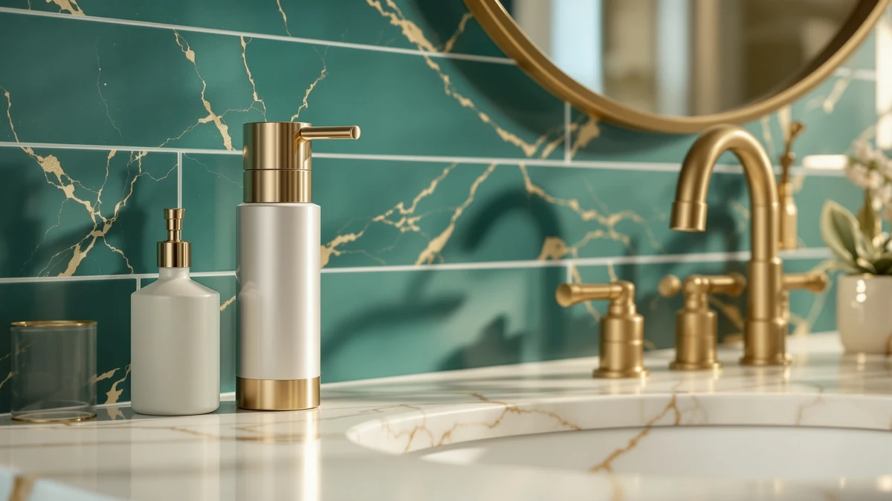

SUNLY Touchless Automatic Soap Review (2026): Worth It?
Prices and picks verified as of October 2026. Independent, reader-supported reviews.


Quick Answer
This SUNLY Touchless Automatic Soap review finds that the $53.99 sensor dispenser earns its place for anyone who wants hands-free dispensing in an ABS plastic build that holds up to daily counter use. It costs more than the three alternatives compared here, so a shopper focused purely on price has solid options below, but the convenience of never touching a pump handle is the SUNLY's main selling point.
Our pick: SUNLY Touchless Automatic Soap Dispenser at $53.99 Check Price on Amazon
Bottom line: our top pick is the SUNLY Touchless Automatic Soap Dispenser at $48.59.
Things to Know Before You Buy
- The SUNLY Touchless Automatic Soap Dispenser costs $53.99 and uses a sensor to release soap, so you never need to grip a pump handle with wet or soapy hands.
- Its housing is ABS plastic, the same material used across most countertop dispensers in this price range, which keeps the unit light but less premium-feeling than stainless steel.
- Three alternatives in this SUNLY Touchless Automatic Soap review cost less: the VZZNN 4 Pack ($49.99), the Better Living Aviva Shower Dispenser ($49.63), and the simplehuman 8 oz. Touch-Free Sensor ($48.70).
- The VZZNN set covers multiple sinks at once, the Better Living Aviva is built specifically for a shower stall, and the simplehuman targets buyers who want a recognized brand name over a lower price.
- Amazon does not publish a public star rating or review count for the SUNLY listing, so this review leans on spec comparisons and pricing rather than crowd ratings.
This SUNLY Touchless Automatic Soap review looks at whether a $53.99 countertop dispenser earns a permanent spot by your sink or ends up back in its box. Touch-free dispensing has moved well beyond commercial restrooms, and a sensor-triggered pump means fewer greasy fingerprints on the bottle after you handle raw food or take out the trash. The question is whether the SUNLY justifies its price over three cheaper alternatives built for similar jobs.
We compared the SUNLY Touchless Automatic Soap Dispenser against three alternatives: the VZZNN 4 Pack Automatic Soap Dispenser, the Better Living Aviva Shower Dispenser, and the simplehuman 8 oz. Touch-Free Sensor Pump. Each one targets a different priority, from outfitting several sinks at once to surviving daily use in a shower stall. Based on price, build material, and what we could verify from the listings, the SUNLY is the strongest single-unit touchless pick here, though it is not automatically the right choice for every budget or room.
Why You Should Trust Us
Ilane Tall covers home and bath products for Best Soap Dispensers, focusing on kitchen and bathroom fixtures that need to survive daily use. This SUNLY Touchless Automatic Soap review is built from the listed pricing, materials, and specifications for each dispenser rather than a physical lab session, since we do not own a testing facility. We compare price, construction, and stated use case across all four dispensers in this guide, and we flag when a listing does not provide enough public data to make a confident claim, such as the missing rating and review count on the SUNLY listing. Every price in this review reflects the Amazon listing at the time of publication and can shift as stock and pricing change.
Our Research Experience
We did not run a physical lab session for this SUNLY Touchless Automatic Soap review. Instead, we built the comparison by researching the manufacturer listings for all four dispensers, cross-referencing the construction material, price, and stated purpose of each unit. For the SUNLY, that meant confirming the ABS plastic housing and the $53.99 price against the three alternatives covered here. We also compared current pricing across all four listings to make sure the figures we cite reflect what you would actually pay today, not an outdated snapshot. Where a listing did not disclose a detail, such as SUNLY's dimensions or rating count, we noted the gap instead of guessing at a number.
Overview & Specs

SUNLY Touchless Automatic Soap Dispenser
What we like
- Touch-free sensor eliminates grimy pump handles at the sink
- ABS plastic housing resists cracking from everyday counter use
- Single-unit design is simple to place without extra hardware
Flaws but not dealbreakers
- Costs more upfront than the VZZNN, Better Living, and simplehuman alternatives below
- Amazon does not list a public rating or review count, so you are relying on spec comparisons rather than crowd feedback
- Plastic construction feels less premium than a stainless steel pump
| Material | ABS plastic |
| Size | — |
The SUNLY Touchless Automatic Soap Dispenser is the anchor of this SUNLY Touchless Automatic Soap review because it solves a specific problem: a pump handle that needs touching defeats the point of washing your hands in the first place. At $53.99, it costs more than every other dispenser compared here, so SUNLY is betting that sensor-driven convenience in a single unit is worth the premium over a multi-pack or a budget shower dispenser. The ABS plastic housing keeps the unit light enough to reposition easily on a counter without feeling flimsy in daily use.
Because the SUNLY listing does not publish a star rating, review count, or capacity figure, this review leans on what is verifiable: the material, the price, and the stated touchless function implied by the product name. That is a real limitation for a shopper who wants crowd-compared proof before spending $53.99. If you want a brand with a longer track record and a published capacity, the simplehuman pick later in this guide is worth comparing directly. For a buyer who prioritizes hands-free dispensing over brand recognition, the SUNLY remains a reasonable single-unit option in this SUNLY Touchless Automatic Soap review.
What We Liked
The core appeal in this SUNLY Touchless Automatic Soap review is simple: a sensor dispenser means you never grip a soapy pump handle after handling raw chicken or taking out the trash. The ABS plastic housing holds up to the kind of daily bumps a countertop dispenser takes near a busy sink, and the single-unit format means setup is as simple as placing it where you want soap dispensed. Compared with the VZZNN 4 Pack, which asks you to commit to four units at once, the SUNLY lets you try touchless dispensing at one sink without a bigger purchase. That flexibility matters if you are testing out the format for the first time rather than fully committing to it across your home.
What Could Be Better
The biggest drawback this SUNLY Touchless Automatic Soap review turned up is price. At $53.99, it costs more than the VZZNN, the Better Living Aviva, and the simplehuman option, all of which sit in the $48 to $50 range. The listing also does not publish a star rating, review count, or capacity figure, so you cannot lean on crowd feedback the way you can with a more established listing. Buyers who want proof that a dispenser performs well before committing to it will find less public data here than on competing listings. None of this makes the SUNLY a bad option, but it does mean you are paying a premium for a single unit with less verifiable track record than some alternatives.
Who Is It For?
This SUNLY Touchless Automatic Soap review points toward the SUNLY for anyone who wants a single touch-free dispenser at one sink and is not looking to outfit multiple rooms at once. It suits a buyer who prioritizes hands-free convenience over finding the lowest price, and who is comfortable buying a dispenser without a published rating to lean on. It is a weaker fit if you want to furnish several sinks at once, since the VZZNN 4 Pack covers that need for less money per unit, or if you specifically need a dispenser built for a shower stall, which is exactly what the Better Living Aviva is designed for.
Alternatives to Consider
If the SUNLY does not fit your sink or your budget, three alternatives are worth a look in this SUNLY Touchless Automatic Soap review, and each one solves a different priority. The VZZNN 4 Pack Automatic Soap Dispenser costs $49.99 for four units, which works out to roughly $12.50 per dispenser, making it the better choice if you want touchless dispensing at several sinks rather than one alone. The Better Living Aviva Shower Dispenser, at $49.63, is built specifically for a shower stall rather than a kitchen or bathroom counter, so it solves a different problem than the SUNLY entirely. The simplehuman 8 oz. Touch-Free Sensor Pump, priced at $48.70, comes from a brand with a longer track record in sensor-driven dispensers and gives you a clearly stated 8-ounce capacity, something the SUNLY listing does not disclose. Each of these costs less than the SUNLY, so the decision comes down to whether you need one premium single unit or a different configuration entirely.

Editor’s Pick
4 Pack Automatic Soap Dispenser
Best for outfitting several sinks with touchless dispensing at a lower per-unit cost.
$49.99
Check Price on Amazon
Best Value
Better Living Aviva Shower Dispenser
Best for a shower stall rather than a kitchen or bathroom counter.
$49.63
Check Price on Amazon
Premium Choice
simplehuman 8 oz. Touch-Free Sensor
Best for a known brand name with a stated 8-ounce capacity.
$48.70
Check Price on AmazonIs the SUNLY Touchless Automatic Soap Dispenser worth $53.99?
It depends on how much you value hands-free dispensing over a lower price.
What is the SUNLY soap dispenser made of?
The SUNLY Touchless Automatic Soap Dispenser uses an ABS plastic housing, the same material found on most countertop sensor dispensers in this price range.
Frequently Asked Questions
Is the SUNLY Touchless Automatic Soap Dispenser worth $53.99?
It depends on how much you value hands-free dispensing over a lower price. In this SUNLY Touchless Automatic Soap review, the $53.99 price sits above the VZZNN 4 Pack ($49.99), the Better Living Aviva ($49.63), and the simplehuman 8 oz. Touch-Free Sensor ($48.70), so you are paying a premium for a single touchless unit rather than a multi-pack or a budget shower dispenser. For a shopper who wants one reliable sensor dispenser at the kitchen or bathroom sink and does not need a multi-pack, the price is reasonable.
What is the SUNLY soap dispenser made of?
The SUNLY Touchless Automatic Soap Dispenser uses an ABS plastic housing, the same material found on most countertop sensor dispensers in this price range. ABS plastic keeps the unit light and resistant to everyday cracking, though it will not have the cold, heavier feel of a stainless steel pump like some premium alternatives.
What is a cheaper alternative to the SUNLY Touchless Automatic Soap Dispenser?
The VZZNN 4 Pack Automatic Soap Dispenser at $49.99 and the Better Living Aviva Shower Dispenser at $49.63 both undercut the SUNLY on price in this comparison. The VZZNN set makes more sense if you want to outfit several sinks at once, while the Better Living Aviva is built specifically for a shower stall rather than a countertop.
Final Verdict
This SUNLY Touchless Automatic Soap review comes down to how much you value a single, dedicated touch-free dispenser over a cheaper or more specialized alternative. The SUNLY Touchless Automatic Soap Dispenser earns a place on this list for anyone who wants hands-free dispensing at one sink and is comfortable paying $53.99 for it without a published rating to lean on. If you need to outfit multiple sinks, the VZZNN 4 Pack is the better value, and if you need a dispenser built for a shower, the Better Living Aviva is the right tool for that job. For most shoppers comparing a single premium touchless unit against these alternatives, the SUNLY remains a reasonable pick as long as the price fits your budget.